Paradigmas de la Computación Distribuida
1.1 ¿Qué es esto y por qué nos importa?
1.1.1 El Concepto de Paradigma
Antes de hablar de cables y servidores, definamos el término. Un paradigma es simplemente un patrón o modelo. En computación, dada la complejidad enorme de conectar máquinas, usamos estos modelos para no tener que reinventar la rueda cada vez que escribimos software.
1.1.2 Aplicación Distribuida vs Convencional
Imagina un programa en tu portátil (Word, Calculadora). Eso es convencional. Una aplicación distribuida tiene dos características que la hacen especial y difícil:
- Comunicación: Necesita que dos o más procesos independientes (en máquinas distintas o la misma) intercambien datos.
- Sincronización: No basta con enviar datos; hay que coordinar cuándo se envían y reciben.
Concepto Clave: Abstracción La abstracción es el arte de esconder los detalles sucios.
- Ejemplo: Cuando conduces, usas el volante (abstracción alta). No inyectas gasolina manualmente en los cilindros (abstracción baja). En sistemas distribuidos, buscamos herramientas que oculten la complejidad de la red al programador.
1.2 Los Cimientos (Nivel Bajo)
Aquí es donde todo empieza. Es el nivel de abstracción más bajo.
El Paso de Mensajes (Message Passing)
Concepto Principal: es el paradigma fundamental. Cualquier cosa que ocurra en Internet, en el fondo, es un mensaje llendo de A a B. Es como pasarse notitas en clase. Tú escribes un papel (petición), se lo das a un compañero y esperas que te devuelva otro papel (respuesta).
Detalle Técnico:
- Se basa en operaciones de Entrada/Salida (I/O) similares a escribir en un archivo.
- Primitivas básicas:
send(enviar) yreceive(recibir) - Si la conexión es continua (como una llamada telefónica), usamos
connectydisconnect - La herramienta real: esto se implementa habitualmente con Sockets a nivel de Sistema operativo.
Cuando tu navegador pide una web, por debajo está abriendo un socket y pasando mensajes. Un "problema" a tener en cuenta es que los procesos están fuertemente acoplados (ambos deben de estar activos al mismo tiempo para que se produzca la comunicación).
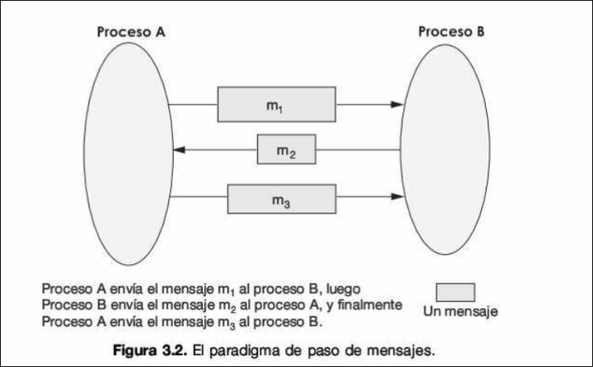
Info
Una primitiva es la operación más básica y elemental que te ofrece un sistema o lenguaje, es un ladrillo indivisibles con el construyes cosas más grandes
Un socket es un enchufe de software. Es el punto final (endpoint) de una comunicación bidireccional entre dos programas a través de la red. Imagina que tu ordenador es un bloque de pisos. El Socket es la puerta de un apartamento específico (identificado por una IP y un Puerto). Si quieres enviar una carta a otro edificio, necesitas saber la dirección del edificio (IP) y el número de puerta (Puerto) del destinatario.
Usamos connect/disconnect cuando necesito fiabilidad absoluta y un canal estable. Antes de enviar datos, debes descolgar el teléfono (connect) y al terminal colgar (disconnect). Garantiza que los datos llegan y en orden (Servicio orientado a conexión). No se usa (servicio no orientado a conexión) cuando la velocidad es más importante que la fiabilidad, o cuando envías mensajes sueltos. Solo se hace send y receive sin llamar antes. Connect tarda tiempo.
1.3 Arquitecturas Básicas
Una vez sabemos pasar mensajes, ¿cómo organizamos a los participantes?
1.3.1 Cliente-Servidor (Client-Server)
Concepto Principal: es el modelo más conocido y asimétrico. Hay una clara división de jerarquía. Piensa en un restaurante:
- Servidor (Camarero): Espera pasivamente a que alguien le llame
- Cliente (Comensal): Inicia la conversación pidiendo algo (request) y espera la comida (response)
La arquitectura cliente-servidor es asimétrica puesto que cada nodo que interviene en la arquitectura tiene funciones, objetivos y responsabilidades diferentes. Hay una clase diferencia jerárquica y funcional:
- Cliente (rol activo): inicia la comunicación y realiza peticiones al servidor
- Servidor (rol pasivo): espera pasivamente a recibir peticiones de los clientes para poder procesarlas.
El objetivo que se persigue es proporcionar una arquitectura de red en la que se puedan ofrecer servicios facilitando la sincronización de eventos y permite que los clientes sean más ligeros al centralizar los recursos en el servidor.
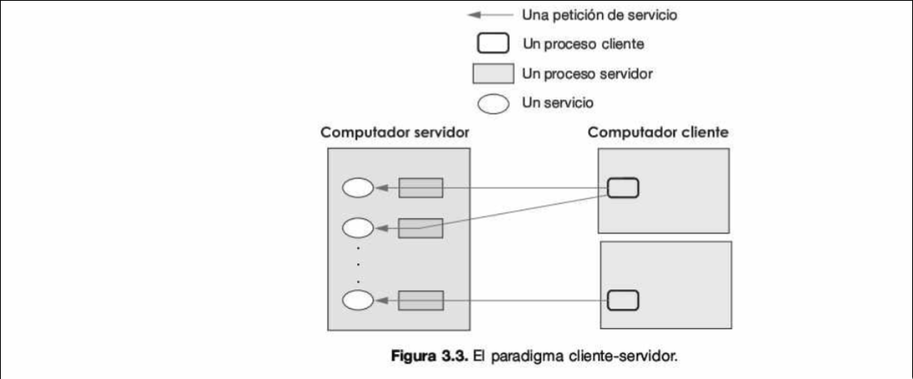
1.3.2 Peer-to-Peer (P2P)
Concepto Principal: Arquitectura simétrica y descentralizada. Todos los nodos son iguales ("peers"). Es una mesa redonda de trabajo o una comuna. No hay jefes. Si tú tienes un bolígrafo y yo lo necesito, me lo das. Si yo tengo una goma y tú la necesitas, te la doy. A veces actúo como servidor (te doy cosas) y a veces como cliente (te pido cosas).
Detalle Técnico:
- Ideal para compartir recursos (ficheros, ciclos de CPU) de forma escalable
- Hibridos: a veces se usa un servidor central solo como directorio (para saber quién tiene qué), como hacía el Napster original, pero la transferencia es directa entre usuarios.
Se usa en BitTorrent, Videoconferencias, Blockchain, aplicaciones de chat, etc.
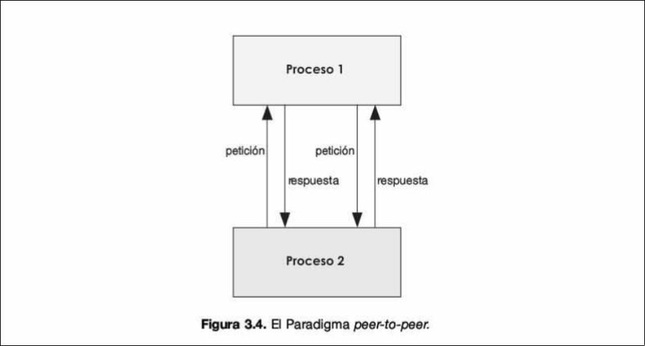
Info
Descentralizado significa que no existe un punto único de fallo ni una autoridad suprema. En un sistema centralizado, si tiras el servidor central, nadie puede operar.
En P2P la red es una malla, si desconectas a 100 usuarios, los otros 1000 siguen comunicándose entre ellos.
1.4 Subiendo de Nivel: Ocultando la Red (Middleware)
Aquí intentamos que el programador se olvide de que existen cables de red. Queremos programar como si todo estuviera en mi ordenador".
Info
El middleware es una capa de software que actúa como intermediario entre 2 procesos independientes (aplicaciones, hardware, SO ...). Es un mecanismo útil para el desacoplamiento y la abstracción a la hora de desarrollar aplicaciones distribuidas.
1.4.1 RPC (Remote Procedure Call)
Concepto Principal: Abstracción que permite llamar a una función que está en otro ordenador como si fuera una función local. Imagina que en tu código escribes calcularSuma(5, 10). Tú no sabes si esas suma la hace tu CPU o superordenador en Japón. RPC se encarga de enviar el 5 y el 10 a Japón esperar, y devolverte 15.
Detalle Técnico:
- Usa unos componentes llamados Stubs. El stub es una pieza de código falsa en tu ordenador que finge ser la función remota, su único trabajo es empaquetas los datos y enviarlos (ya lo veremos más adelante)
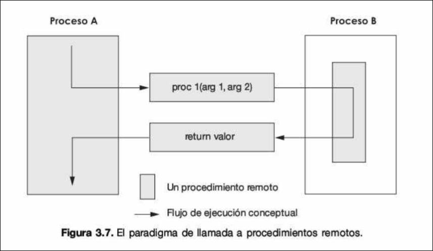
1.4.2 RMI (Remote Method Invocation) y Objetos Distribuidos
Concepto Principal: Es la evolución de RPC para la Programación Orientada a Objetos
Diferencia con RPC: En RPC llamas a funciones (acciones). En RMI, invocas a métodos de un Objeto que vive en otra máquina. Puedes pasar objetos enteros como argumentos.
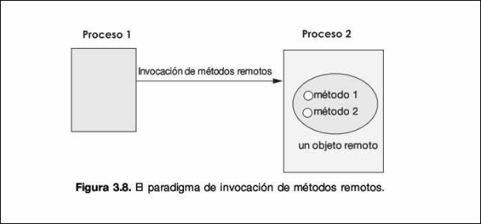
1.4.3 ORB (Object Request Broker)
Concepto Principal: El traductor universal o intermediario de objetos
¿Qué pasa si quiero que un objeto escrito en C++ en Windows hable con un objeto escrito en Java en Linux? RMI (de Java) no basta. La solución es ORB, que es un middleware (intermediario) que redirige peticiones entre objetos heterogéneas (distintos lenguajes/plataformas). El estándar famoso el CORBA.
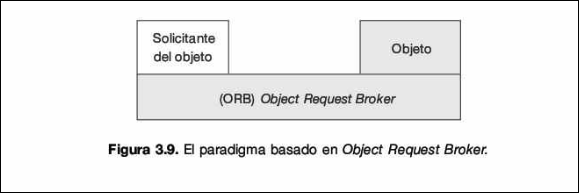
1.5 Desacoplamiento: Sistemas de Mensajes (MOM)
A veces no queremos respuesta inmediata. A veces queremos "dejar un recado".
Concepto Principal: Message-Oriented Middleware (MOM). Un intermediario gestiona colas de mensajes, permitiendo comunicación asíncrona.
Info
El desacomplamiento consiste en eliminar las dependencias rígidas entre dos sistemas. Podemos diferenciar 2 tipos:
- Temporal: el emisor y el receptor no necesitan estar conectados a la vez. Yo envío el mensaje a las 10:00, me desconecto, y tú lo recibes a las 14:00.
- Espacial: el emisor no necesita saber la dirección IP o identidad exacta del receptor, solo envía el mensaje a un buzón.
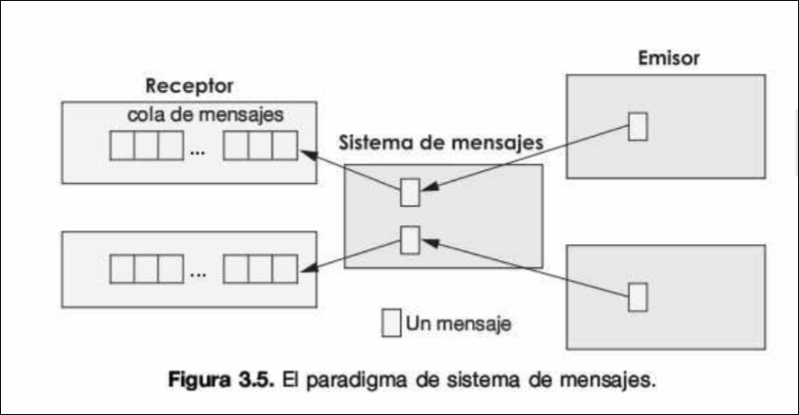
1.5.1 Modelo Punto a Punto
Funcionamiento: Un emisor deja un mensaje en una cola. El receptor lo recoge cuando puede. Pensadlo como el correo electrónico.
Ventaja: Desacomplamiento total. Si el receptor está apagado, el mensaje espera en la cola. No se pierde.
1.5.2 Modelo Publica/Suscribe (Publish/Subscribe)
Funcionamiento: Basado en Eventos.
- Un proceso (Publisher) dice: "!Ha marcado Rodrygo Ganges!" (Evento)
- El sistema distribuye este mensaje a todos los que se hayan "suscrito" al tema "Fútbol"
Por ejemplo, notificaciones de Youtube, Feeds de Twitter, Grupos de Whatsapp.
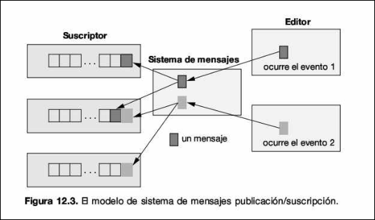
1.6 Paradigmas Avanzados (Conceptos Futuristas)
Estos modelos son más específicos, pero interesantes.
1.6.1 Servicios de Red
Los servicios se "registran" en un directorio. El cliente busca en el directorio "necesito imprimir", y el directorio le da la dirección de la impresora disponible. Es autoconfigurable.
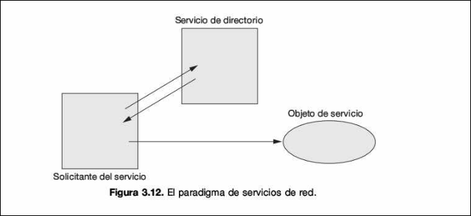
1.6.2 Espacio de Objetos
Imagina una pizarra compartida en la nube. Los productores escriben datos en la pizarra. Los consumidores leen o toman datos de la pizarra. Es la abstracción más alta: no sabes quien consume tu dato, solo lo dejas ahí. Ejemplo: JavaSpaces
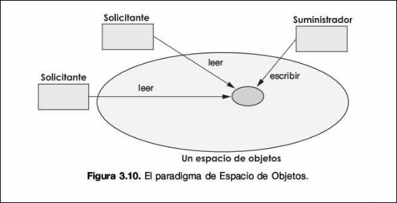
1.6.3 Agentes Móviles
En vez de mover los datos hacia el programa, movemos el programa hacia los datos. Un "agente" viaja de servidor en servidor realizando tareas.
Imagina que quieres buscar una foto específica en una base de datos de la NASA de 50 Petabytes.
-
Método tradicional: Te descargas los 50 Petabytes (tardas años) y tu programa busca la foto.
-
Método Agente: Envías tu pequeño programa (Agente) de 5KB al servidor de la NASA. El programa se ejecuta allí (localmente ), busca la foto rapidísimo (porque está al lado del disco duro) y solo te envía de vuelta la foto encontrada. Ahorras un ancho de banda inmenso.
El Agente: Es un programa autónomo. Decide cuándo irse al siguiente nodo del itinerario. Lleva consigo su "equipaje" (el estado actual de su ejecución).
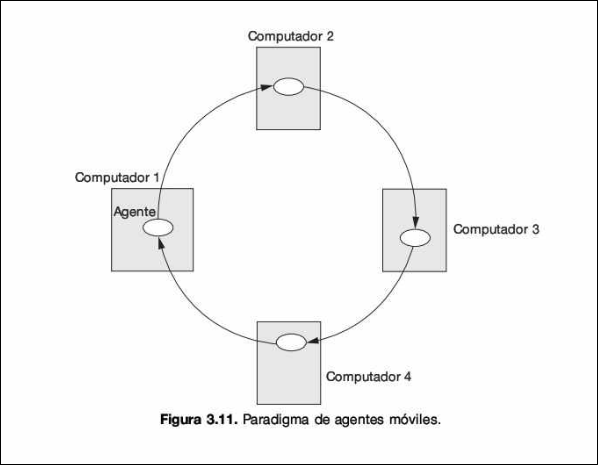
1.6.4 Paradigma de aplicaciones colaborativas
Este paradigma modela cómo trabajamos los humanos en equipo. Los procesos no solo hablan, si no que cooperan para manipular un estado compartido en tiempo real.
Componentes clave:
- Multicasting: Enviar un dato a muchos a la vez (ej: cuando escribes una letra en Google Docs, se envía "a la vez" a todos los que miran el documento).
- Pizarras Virtuales (Whiteboards): Es la memoria compartida visual. Todos pueden leer y escribir
Si dos personas escriben en la misma línea a la vez, ¿quién gana? Las aplicaciones colaborativas necesitan algoritmos complejos (como Relojes Lógicos, que veremos más adelante) para ordenar estos eventos y que todos vean el mismo documento final.
Ejemplo Real: Google Docs, Trello, Slack, Pizarras de Zoom.
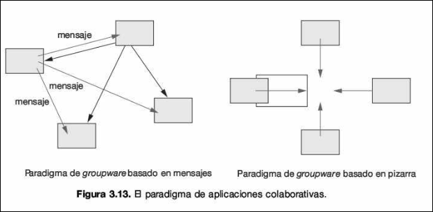
1.7 Resumen y Comparativa
| Nivel de Abstracción | Paradigma | ¿Qué intercambian? | Ejemplo Real |
|---|---|---|---|
| Bajo (Cimientos) | Paso de Mensajes | Bytes/Datos crudos | Sockets, TCP/IP |
| Medio | RPC / RMI | Llamadas a Funciones/Métodos | Java RMI, gRPC |
| Medio | Mensajería (MOM) | Mensajes Asíncronos | RabbitMQ, Kafka |
| Alto | Objetos Distribuidos / ORB | Objetos complejos | CORBA |
| Muy Alto | Espacio de Objetos | Datos en pizarra compartida | JavaSpaces |